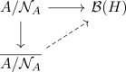

completion of pre c star algebras
Proposition
The inclusion fo category of nonunital C-star algebras into the category of nonunital pre C star algebras admits a left adjoint, the completion functor
Proof
pointwise constructuion
Let $A$ be a pre C star algebra. Then let $\mathcal{N}_{A} = \{a \in A \vert \| a \|_{\mathrm{max}, A} = 0\}$ be the star ideal of
Then $A/N_{A}$ is a nonunital star algebra and we claim that $\pi: A \rightarrow A/\mathcal{N}_{A}$ is an isometry (up to injectivity). It is contractive for formal reasons and for any representation of a nonunital star algebra
where we use that $\mathcal{B}(H)$ is canonically equipped with the maximal seminorm, hence $\| a \|_{\mathrm{max}} \leq \| \pi(a)\|_{\mathrm{max}}$.
Therefore $\| - \|_{\mathrm{max}, A/N_{A}}$ is a norm and we can complete, i.e. consider $\overline{A/\mathcal{N}_{A}}$ with the maximal norm. Now any representation $A/\mathcal{N}_{A} \rightarrow B(H)$ is a bounded operator by construction of the maximum norm. Hence by continuity and completeness, we can lift any representation

This implies that both the maximum norm and the induced norm from the completion agree (todo)
Hom isomorphism
For any C-star algebra $B$ and pre c star algebra $A$, we have that any map $A \rightarrow B$ must map $\mathcal{N}_{A}$ to $\mathcal{N}_{B} = 0$, hence it factorizes through the quotient. Now $B$ is complete, so there exists an extension to the completion, which gives a homomorphim. This shows that it is surjective.
Now let $f,g: \mathrm{compl}(A) \rightarrow B$ be two homomorphisms, such that they restrict